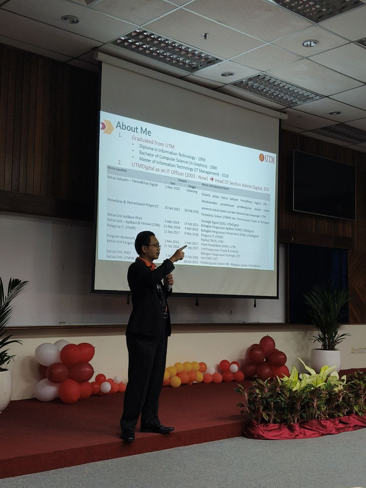

During our amazing visit to UTMDIGITAL for the Open Day, on the 29th of October 2025. I was blessed to listen to a wonderful speaker by the name of Helmee Bin Yaacob, who is in charge of the system development of UTMDigital. He explained various of things to keep in mind when conducting a project, being the leader of the group. He explained the reasons of failure in a team project, how to manage projects, the optimized flow of projects, in simplified words is that it all starts with learning what the client wants, coding the need, testing, then maintain the system making sure to debug as problems come. Making sure the project is a success.
I even got the chance to ask the question of "How does a fresh graduate with little to no experience in the industry succeed?" The answer he gave me was, to not be afraid of making mistakes, making sure to improve as you go, because you're not learning anything if you just wait for the perfect timing. In simplified words, I understood to just go with the flow, and improve as I go, the learning process is the most important process in being an expert.